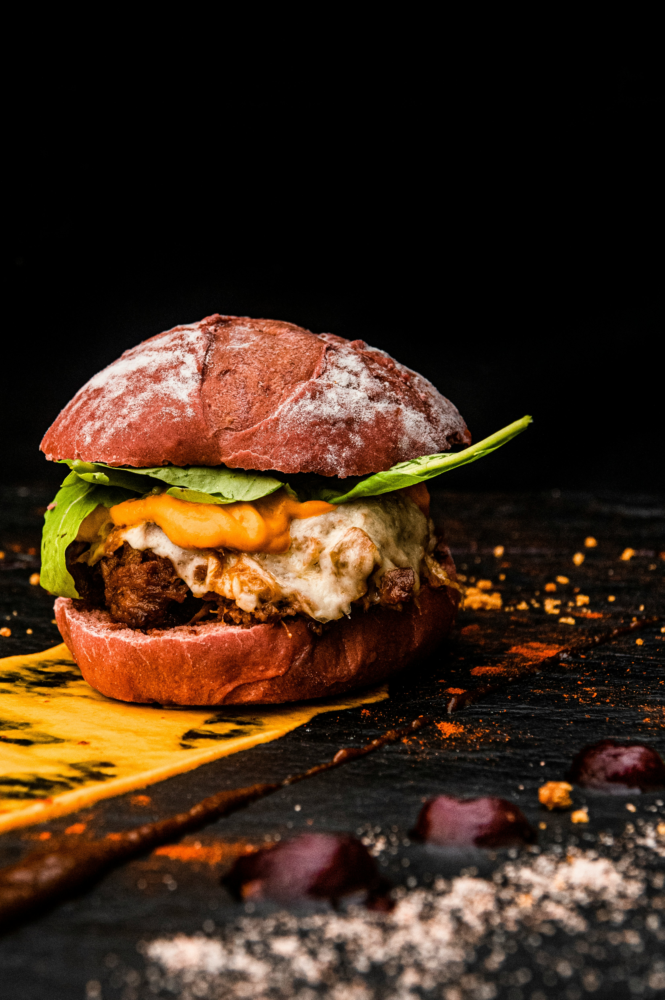

Burger with pork patty, blue cheese and pear

About the dish
A juicy pork burger with oozy, melting blue cheese,
crisp slices of sweet pear and a fresh, peppery
salad, all tucked into a soft toasted bun. The
combination of salty, creamy cheese and sweet,
crunchy pear may sound unexpected, but one bite
and you’ll wonder why you never tried it before.
And best of all, it’s on the table in under 20
minutes, perfect for a weeknight treat or a lazy
weekend lunch!
Ingredients (for 2 portions)
- 1 ripe sweet pear
- 100g mixed spinach, rocket & watercress
- 300g higher-welfare minced pork
- 2 soft burger buns
- 30g soft blue cheese
- Plus: extra virgin olive oil, red wine vinegar,
salt and black pepper
Follow the steps
- Slice the pear lengthways very thinly.
Dress it with the salad leaves, a splash
of olive oil and red wine vinegar, and a
pinch of black pepper.
- Season the minced pork, mix it with your hands
and shape into patties about 1 cm thick.
- Rub the patty with a teaspoon of olive oil and
cook it in a large non-stick frying pan over
high heat for 2 minutes. Meanwhile, toast the
halved bun in the same pan until golden.
- Flip the burger. After 2 more minutes, crumble
the blue cheese into the pan beside it and let
it melt.
- Place the burger on top of the melted cheese
so it gets coated, then transfer it to the
bottom half of the bun.
- Pile on as much pear salad as you can, add the
bun lid, press down gently and serve any
leftover salad on the side.
Back to all recipes